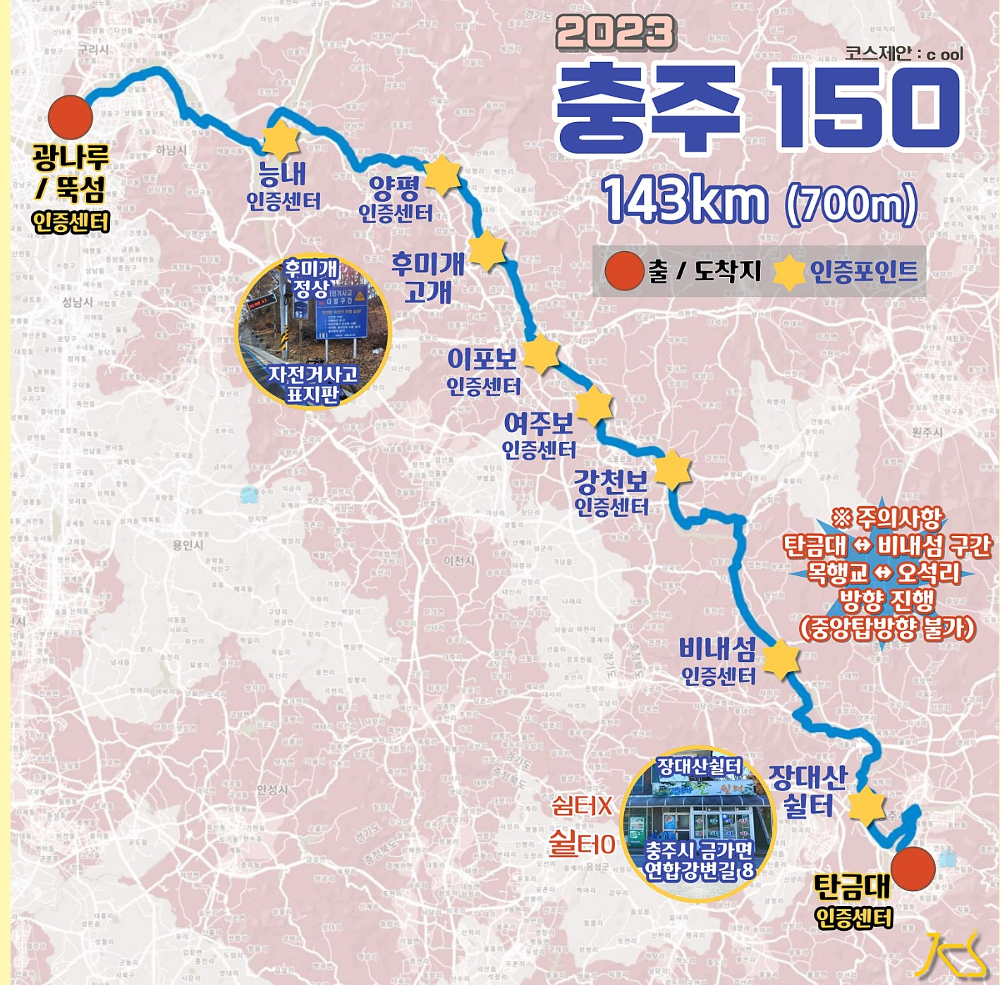

| 코스명 | 충주 150 |
| 코 스 | 광나루 뚝섬(출발)-능내-양평-후미개고개-이포보-여주보-강천보-비내섬-장대산쉴터-탄금대(도착) |
| 거 리 | 148.47km |
| 시 간 | 6시간 15분 |
| GPX 파일 | 충주150 GPX 다운로드 |

무더위가 한참인 7월 1일 날씨가 좋은 것이 원망스럽기는 처음인 라이딩이었다.
지난주 춘천 100라이딩과 같은 장소인 광나루 뚝섬에서 출발했다.
아침부터 찌는 더위를 가르며 능내를 지나 양평으로 향했는데, 더위가 목까지 올라와 숨쉬기도 힘들었다.
우리 일행은 양평 인증센터에서 잠시 숨을 돌릴 겸 쉬어가기로 했다.
쉬는 도중, 다른 팀의 아주머니께서 수박 한 조각씩 나눠 주셨다.
그 수박 한 조각이 한 줄기 생명수처럼 느껴졌다. 너무 감사해서 가지고 있던 간식을 고마움의 표시로 건네줬다.
후미고개를 넘어 이포보, 여주보로 7월 더위를 한껏 맛보며 라이딩했다.
아스팔트 위는 거의 40도에 육박하는 날씨였고, 아스팔트 길을 내려와 강가로 내려오니 주변의 나무와 숲들로 인해 제법 시원함을 느낄 수 있었다.
그래도 속도계에 나타나는 기온은 35도. 그 전에 국토종주 때 달려본 길이었지만, 더위 때문인지 더 힘들고 길게 느껴졌다.
비내섬 입구에 도착해 카페가 있어 다행히도 극한에 다달았던 더위를 식힐 수 있었다.
카페에서 아이스 아메리카노와 아이스크림으로 더위를 식히고, 그나마 해가 조금씩 기우는 것을 몸으로 느끼며 마지막 경유지인 장대산 쉴터로 향했다.
하지만 장대산 쉴터는 그저 조그마한 매점이었다. 여기서 시원한 음료를 마시며 더위를 달래고 우리는 마지막 종착지인 충주 탄금대로 향했다.
탄금대에 다다를 때에는 남아있는 모든 힘을 짜내어 내달렸다. 여기까지 더위와 싸우며 고생한 피곤함과 힘들음이 한꺼번에 사라지는 희열을 느낄 수 있었다.